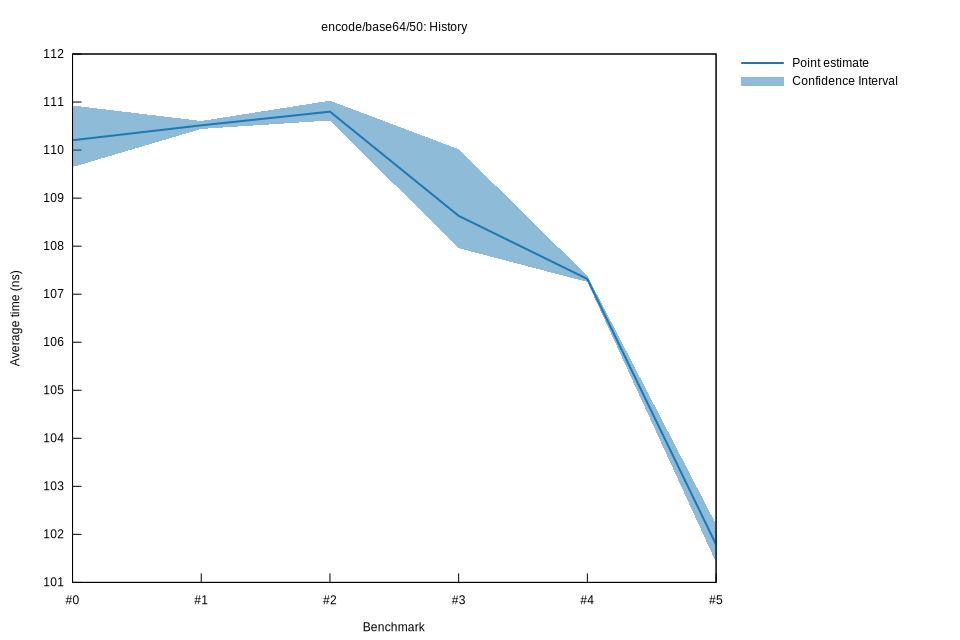

# 32022-10-15T17:13:59+03:00
|
Lower Bound |
Estimate |
Upper Bound |
| Value: |
107.96ns |
108.63ns |
110.02ns |
| Throughput: |
450.52MiB/s |
447.73MiB/s |
442.09MiB/s |
| Change in Value: |
-2.4667% |
-2.1057% |
-1.5645% |
| Change in Throughput: |
+2.5291% |
+2.1510% |
+1.5894% |
No change in performance detected.
# 22022-10-15T16:49:11+03:00
|
Lower Bound |
Estimate |
Upper Bound |
| Value: |
110.62ns |
110.80ns |
111.03ns |
| Throughput: |
439.69MiB/s |
438.97MiB/s |
438.06MiB/s |
| Change in Value: |
-0.0127% |
+0.1720% |
+0.3612% |
| Change in Throughput: |
+0.0127% |
-0.1717% |
-0.3599% |
Change within noise threshold.
# 12022-10-08T17:25:57+03:00
|
Lower Bound |
Estimate |
Upper Bound |
| Value: |
110.44ns |
110.52ns |
110.61ns |
| Throughput: |
440.40MiB/s |
440.10MiB/s |
439.74MiB/s |
| Change in Value: |
-0.8246% |
+0.0026% |
+0.7304% |
| Change in Throughput: |
+0.8314% |
-0.0026% |
-0.7251% |
Change within noise threshold.
# 02022-10-08T17:06:55+03:00
|
Lower Bound |
Estimate |
Upper Bound |
| Value: |
109.65ns |
110.21ns |
110.93ns |
| Throughput: |
443.58MiB/s |
441.33MiB/s |
438.46MiB/s |